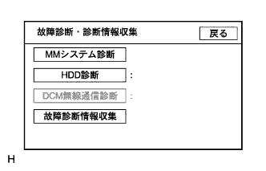
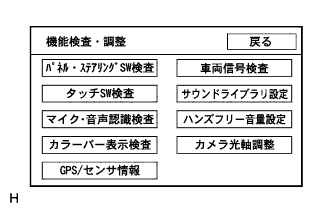

 |
Diagnosis/Diagnosis Information Collection
| Display | Description | Reference |
|---|---|---|
| MM System Diagnosis | Displays the names of components connected to the AVC-LAN, collects the current/past DTCs of those components, and displays them as diagnosis results. |

|
| HDD Diagnosis | Performs diagnosis of the built-in HDD. |
|
| Diagnosis Information Collection | This switch can be pressed but is not used. | - |
- □ HINT □
- Each diagnosis/diagnosis information collection screen is drawn by the navigation receiver assembly.
 |
Function Check and Adjustment
| Display | Description | Reference |
|---|---|---|
| Panel and Steering Switch Check | Inspects the operating condition of each switch around the display and the steering switches. |
|
| Touch Switch Check | Inspects the operating condition of the display touch switches. | |
| Microphone/Voice Recognition Inspection | Inspects the microphone connected to the navigation receiver assembly. | |
| Color Bar Display Check | Inspects the color display of the display. | |
| GPS/Sensor Information |
| |
| Vehicle Signal Check | Inspects the condition of vehicle signals input to the display. | |
| Sound Library Setting | Displays HDD recording settings and various music server information. | |
| Hands-free Volume Setting | Sets the hands-free volume. |
|
| Camera Optical Axis Adjustment | Adjusts the back guide monitor system. |
|
- □ HINT □
- Each function inspection/adjustment screen is drawn by the navigation receiver assembly.
 |
Service Information
- □ HINT □
- Service information allows G-BOOK related settings, information checks, and saving and loading of memory.
| Display | Description | Reference |
|---|---|---|
| G Terminal Link Information | G-BOOK terminal ID, flag information, etc. are displayed. |
|
| HELPNET/DCM Information | HELPNET related ID, contract status, maintenance check date, etc. are displayed. |
|
| HELPNET Report History | The history (date and time, status) of HELPNET reports is displayed. |
|
| Remote Security Diagnosis | Remote security inspection results are displayed (not displayed on this model) | - |
| Memory Save/Load | Saves and loads memory using a tool. | - |
- □ HINT □
- Each service information screen is drawn by the navigation receiver assembly.